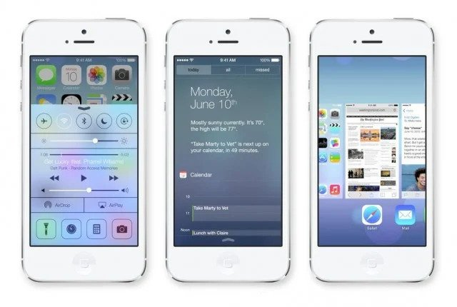
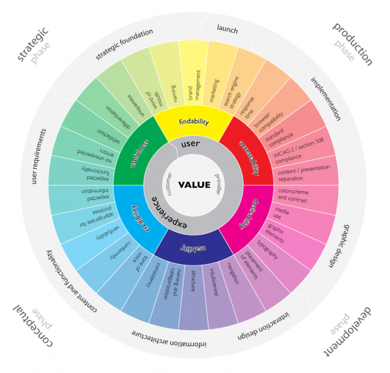

Let’s take a plunge into these two oceans separately and understand how they converge to create one principal goal, user engagement. Let’s start with the most common one, User Interface.
The secret of user retention lies in the consistency of the layout of interface, which in turn will yield a satisfactory user experience. So, use consistent fonts, color schemes, buttons and effects throughout the design. Ensure you have a strong brand identity to pull everything together.
Don’t leave your user with a “figure-out-yourself” interface but present them with something they can easily use – something clear, obvious and intuitive. An user on-boarding process can help users get familar with complex systems.
Come on click it, it is trust worthy


Indeed, clarity of the textual content should be your primary concern here because it is the only thing that allows you users to feel connected with the interface. It’s better if you get your content edited before publishing on the main site.
Though there are dozens of more factors that make up an ideal interface, the aforementioned ones are the most important ones.
Now it’s time to dive deep into the second ocean, User Experience or UX. Basically, the term user experience is usually tagged with the word “design” which makes it user experience design. So, you get it…this is the reason why many of us gets confused between UI and UX design.

UX is the umbrella term that shelters all the aspects that bring us closer to our main goal. These aspects include, content, information architecture, interaction design, user research, usability, information architecture.